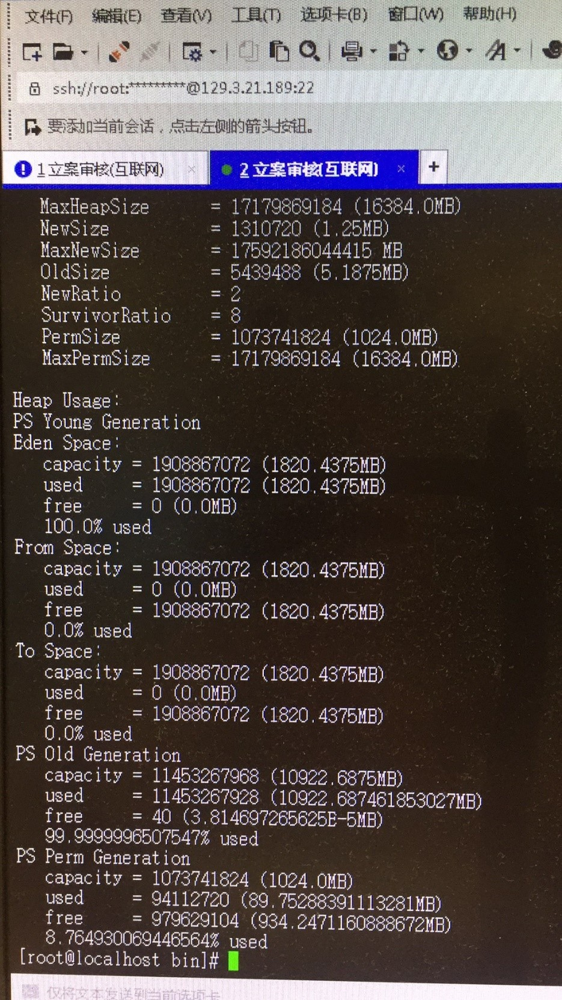
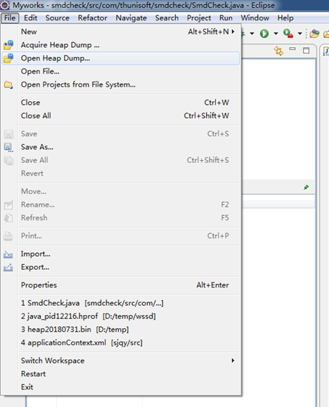

一、现象观察
一般遇到服务器问题时，现场用户会反馈页面打不开，这时候先需要对服务器的情况做个观察定位。
执行命令
ps aux | grep java，查看服务器进程是否还存在，如存在，确认服务器的进程id<PID>；如果服务器进程已不在，可到服务安装的文件夹下查看是否有自动转储的dump文件或者trace日志，要做到OOM宕机时自动生成dump文件，需要在JVM启动参数中增加
-XX:+HeapDumpOnOutOfMemoryError -XX:HeapDumpPath=<dump文件存储路径>；如果服务器进程存在，可执行wget命令访问服务器的某个资源，观察服务器返回情况，或者直接在浏览器中访问服务器的某个资源地址，观察服务器返回状态，如服务器能返回对应资源内容，则说明服务仍然在运行中。
二、JVM运行情况检查
2.1 内存运行检查
2.1.1 JVM堆内存模型
JVM堆内存分为新生代(Young)和老年代(Old)。
新生代又可以划分为三块：
Eden:几乎所有新诞生的java对象存在这个区域。
From Survivor/To Survivor:经历过gc之后仍然存活且未进入到老年代区域的对象。
除此之外还存在一个永久代，又叫方法区。
2.1.2 GC发生条件
首先，一般的对象产生都会在Eden中，较大的对象会直接进入老年代。在新生代中三个区域eden，from，to，一个时刻只会有两片内存被使用，首先eden肯定会被使用，from和to只有一片会被使用，主要是由于虚拟机采用的复制算法。
minor gc：为了避免在gc的时候产生内存碎片，jvm以牺牲空间的方式来做的，首先eden空间不足时会产生一次minor gc，垃圾回收器会在eden和一片使用的Survivor（假设是from）中进行清理，存活下来的对象会被复制到to中（假设to的大小足够装满），然后清空eden和from，保留下来的对象年龄加一。当年龄到达某一个设定值时会进入老年代，默认是15岁。还有一种情况是在Survivor区域相同年龄多有对象大于Survivor区域一半是所有该年龄及以上的都会被移动到老年代。
full gc：minor gc时Survivor区域不足以容纳年轻代中存活下来的对象时，且老年代中剩余空间容纳不了新生代中存活下来的对象时会进行full gc。老年代中因为没有进行分区，所以回收算法使用的是标记－清理算法或者标记整理算法。
2.1.3 jmap命令检查
Jdk自带的jmap命令可以用于检查JVM的内存使用情况。
使用jmap -heap <PID>命令，可以查看对应进程的堆内存使用情况，比如下图所示的结果。

这个显示的结果分为两部分内容，一部分为JVM的堆配置情况，其具体的含义见下图所示。
Heap Configuration: ##堆配置情况
MinHeapFreeRatio = 40 ##最小堆使用比例
MaxHeapFreeRatio = 70 ##最大堆可用比例
MaxHeapSize = 2147483648 (2048.0MB) ##最大堆空间大小
NewSize = 268435456 (256.0MB) ##新生代分配大小
MaxNewSize = 268435456 (256.0MB) ##最大可新生代分配大小
OldSize = 5439488 (5.1875MB) ##老生代大小
NewRatio = 2 ##新生代比例
SurvivorRatio = 8 ##新生代与suvivor的比例
PermSize = 134217728 (128.0MB) ##perm区大小
MaxPermSize = 134217728 (128.0MB) ##最大可分配perm区大小 在这里主要需要关注的是MaxHeapSize和MaxPermSize这俩个参数，这俩个参数影响着JVM的内存运行，如果这俩个参数设置的不当，可能会导致JVM的内存溢出。
主要需要检查的还是堆内存使用情况，整个堆内存使用情况的参数含义如下图所示。
Heap Usage: ##堆使用情况
New Generation (Eden + 1 Survivor Space): ##新生代（伊甸区 + survior空间）
capacity = 241631232 (230.4375MB) ##伊甸区容量
used = 77776272 (74.17323303222656MB) ##已经使用大小
free = 163854960 (156.26426696777344MB) ##剩余容量
32.188004570534986% used ##使用比例
Eden Space: ##伊甸区
capacity = 214827008 (204.875MB) ##伊甸区容量
used = 74442288 (70.99369812011719MB) ##伊甸区使用
free = 140384720 (133.8813018798828MB) ##伊甸区当前剩余容量
34.65220164496263% used ##伊甸区使用情况
From Space: ##survior1区
capacity = 26804224 (25.5625MB) ##survior1区容量
used = 3333984 (3.179534912109375MB) ##surviror1区已使用情况
free = 23470240 (22.382965087890625MB) ##surviror1区剩余容量
12.43827838477995% used ##survior1区使用比例
To Space: ##survior2 区
capacity = 26804224 (25.5625MB) ##survior2区容量
used = 0 (0.0MB) ##survior2区已使用情况
free = 26804224 (25.5625MB) ##survior2区剩余容量
0.0% used ## survior2区使用比例
concurrent mark-sweep generation: ##老生代使用情况
capacity = 1879048192 (1792.0MB) ##老生代容量
used = 30847928 (29.41887664794922MB) ##老生代已使用容量
free = 1848200264 (1762.5811233520508MB) ##老生代剩余容量
1.6416783843721663% used ##老生代使用比例
Perm Generation: ##perm区使用情况
capacity = 134217728 (128.0MB) ##perm区容量
used = 47303016 (45.111671447753906MB) ##perm区已使用容量
free = 86914712 (82.8883285522461MB) ##perm区剩余容量
35.24349331855774% used ##perm区使用比例 堆内存使用情况主要关注Eden Space（伊甸区）和PS Old Generation（老年代）的使用情况。正常情况下，伊甸区和老年代的使用比例会不断发生变化，可能会不断的往上增长然后又开始下降，一旦出现伊甸区和老年代使用全部被占满的情况，则表明JVM已经无法正常的完成GC操作，此时程序必然对外无法响应，一个典型的情况可看下图的结果。
对于已经出现内存使用问题的JVM，需要将内存文件拷贝出来以供后续检查分析，此时可执行命令jmap –dump: format=b,file=<dump文件存储路径> <PID>，如果遇到对应线程无响应的情况，此时还可以加上-F参数来强制进行内存转储。等待dump文件完成后，可将dump文件进行压缩，然后将dump文件从服务器中拷贝出来，以供后续分析检查使用。
除此之外，当PS Perm Generation（永久代）的使用达到100%时，JVM也会出错，在日志中会报出“java.lang.OutOfMemoryError: PermGen space”类似的错误，此时需要重新设置JVM启动参数中的MaxPermSize的值，以保证永久代的内存使用不会溢出。
还可以使用jstat -gcutil <PID>命令来查看对应JVM进程的GC情况，从而帮助我们进行检查。
2.2 线程检查
线程检查主要使用jstack命令来进行，在控制台执行“jstack
对于jstack的日志文件，其中的线程状态有如下几种：
Deadlock（死锁，重点关注）
一般指多个线程调用间，进入相互资源占用，导致一直等待无法释放的情况。
Runnable（执行中）
Waiting on condition（等待资源， 重点关注）
等待资源，或等待某个条件的发生。如果堆栈信息明确是应用代码，则证明该线程正在等待资源。一般是大量读取某资源，且该资源采用了资源锁的情况下，线程进入等待状态，等待资源的读取。
**Waiting on monitor entry或in Object.wait()**（等待获取监视器， 重点关注）
Monitor是 Java中用以实现线程之间的互斥与协作的主要手段，它可以看成是对象或者 Class的锁。每一个对象都有，也仅有一个 monitor。每个 Monitor在某个时刻，只能被一个线程拥有，该线程就是 “Active Thread”，而其它线程都是 “Waiting Thread”，分别在两个队列 “ Entry Set”和 “Wait Set”里面等候。在 “Entry Set”中等待的线程状态是 “Waiting for monitor entry”，而在 “Wait Set”中等待的线程状态是 “in Object.wait()”。
Suspended（暂停）
- Object.wait() 或 TIMED_WAITING（对象等待中）
- Blocked（阻塞， 重点关注）
线程阻塞，是指当前线程执行过程中，所需要的资源长时间等待却一直未能获取到，被容器的线程管理器标识为阻塞状态，可以理解为等待资源超时的线程。
- Parked（停止）
一般的线程日志检查最可能会出现问题的是“Waiting on monitor entry”和“Blocked”状态的线程数过多，如果这两种线程数过多的话，会导致中间件无法启用新线程来面对访问请求（一个中间件的最大线程数是有限制的），从而对外表现出宕机的症状，这时分析日志的时候主要需要查看这些线程被“lock”住的对象堆栈信息是啥，从而定位出原因来。由于每次执行jstack命令获得的都是当前时刻的线程堆栈信息，为了确定问题原因，最好多提取几次jstack日志以做比较。
线程日志问题定位需要一定的经验，对于此种问题的检查还需要多次练习才行。
三、CPU问题定位
当服务器对外显示的现象是CPU一直在高位运行，比如CPU使用率在95%以上持续20分钟以上，此时需要对CPU的使用情况进行检查，以定位是否程序问题导致CPU持续飘高。
在服务器中执行命令top –H -p <PID>可查看某个java进程里各个线程的CPU占用情况，比如某个服务进程的显示的情况如下图所示。
找到其中CPU使用率较高，且执行时间较长的线程，比如上图中25077的线程当前CPU占用率达到了10%，且其执行时间接近9秒，初步判断该进程比较可疑，此时需要进一步排查该进程信息。
按2.2章中介绍的jstack的使用方法，获得该服务当前的线程堆栈信息，然后将查出的可疑进程号25077转换为16进制数61f5，在Thread dump数据中搜索nid为0x61f5的线程号，即可得到该可疑进程当前的堆栈信息，通过堆栈信息即可定位有问题的程序位置。
四、内存问题定位
内存问题的定位需要依赖2.1.3章中使用jmap命令获得的JVM堆内存dump文件。同时内存分析还需要使用“Memory Analyzer Tool”工具（简称MAT），该工具可以从网上单独下载，也可以在Eclipse的Marketplace中进行插件安装。
Eclipse安装完MAT插件后，可以在Eclipse中打开“Memory Analysis”视图，如下图所示。
在“Memory Analysis”视图中。选择File菜单下的“Open Heap Dump”菜单项，打开jmap命令获得的内存dump文件，即可对dump的内存进行分析。

等待工具分析完dump内存后，会得到一个内存分析报告，如下图所示，此时主要需要关注的是“Leak Suspects”项，点击此项，即可获得该内存报告所分析的主要问题。
其中对于每个对象的查看，最常用的功能如下：
List objects:
with outgoing references: 查看它所引用的对象
with incoming references: 查看它被哪些对象引用
通过查看可疑内存对象的引用情况，大致可定位出问题原因来。
内存原因定位也需要操作人有一定的经验，目前生产环境出现内存问题绝大部分的情况都是在数据库中一次性查询了大量数据进入内存，导致JVM的GC操作无法执行，因此程序在查询的时候一定要注意数据量的问题，对于数据量大的表进行查询时，一定要考虑分页的问题。
五、命令总结
ps aux | grep java -- 查看java进程
jmap -heap <PID> -- 查看jvm堆内存使用情况
jmap –dump: format=b,file=<dump文件存储路径> <PID> -- 转储内存文件
jstack <PID> -- 查看jvm实时线程信息
top –H –p <PID> -- 查看对应jvm进程中各线程CPU占用情况
jstat -gcutil <PID> -- 查看jvm的实时gc情况